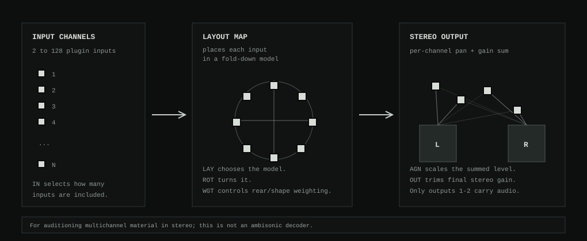
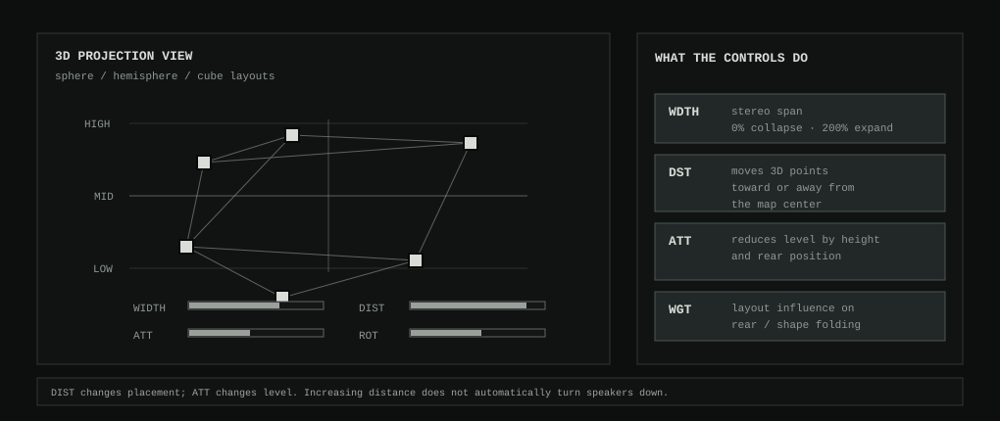
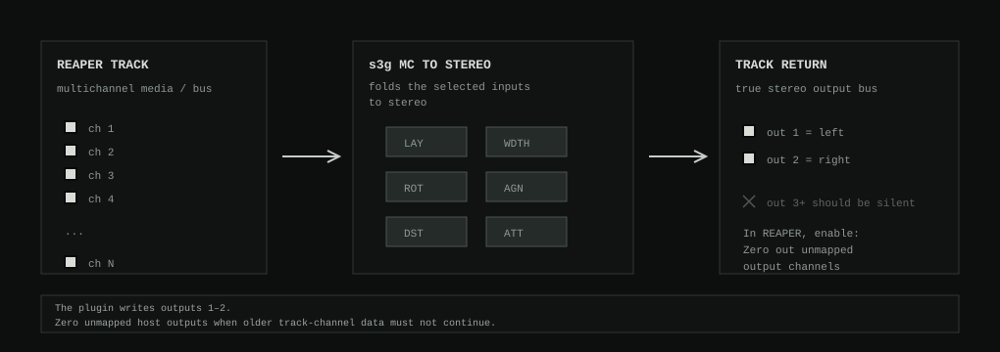

MC to Stereo Autogain
s3g MC to Stereo Autogain folds a multichannel REAPER track down to a true stereo CLAP output. It is meant for auditioning multichannel material when the session is not using an ambisonic decoder.
The plugin accepts up to 128 input channels and returns outputs 1-2 as stereo. It uses layout models, width, rotation, weighting, 3D distance, 3D attenuation, autogain, and output trim to make the fold-down controllable.
Signal Flow
Each included input channel receives a pan and gain value. The plugin sums those weighted channels to left and right, then applies autogain and output gain.

Layout Models
LAY chooses how input channels are interpreted before the stereo fold-down. The current models are:
| Layout | Use |
|---|---|
| Ring projection | Places channels around a circle and folds rear positions into stereo using layout weighting. |
| Linear left-right | Spreads channels in order from left to right. |
| Odd/even stereo | Sends odd/even channel pairs toward left and right. |
| Center-out | Keeps middle channels near center and spreads outer channels outward. |
| Pair-preserving | Keeps adjacent channel pairs close while distributing pairs across stereo. |
| Sphere projection | Uses 3D positions where elevation and rear placement can affect pan and gain. |
| Hemisphere projection | Uses an upper dome model for layouts that do not need lower speakers. |
| Cube projection | Uses an 8-point cube-style model for upper/lower spatial weighting. |
3D Controls
The 3D layouts separate placement from level. DST changes how far elevated or lowered points sit from the center of the projection. ATT changes how much height and rear position reduce gain.

DST exaggerates or collapses the 3D point spread. ATT changes gain attenuation for height and rear placement.Controls
| Control | Meaning |
|---|---|
| IN | How many plugin input channels are included in the fold-down. |
| WDTH | Stereo width. Low values collapse inward; high values exaggerate left/right placement. |
| ROT | Rotates ring and 3D layouts before they are folded to stereo. |
| LAY | Chooses the layout model. |
| WGT | Controls how strongly the layout shape affects rear or grouped channel positions. |
| ATT | 3D attenuation. In 3D layouts, height and rear position can reduce gain. |
| DST | 3D distance. In 3D layouts, upper and lower positions spread away from or toward center. |
| AGN | Autogain mode: off, power/sqrt(N), or energy sum. |
| OUT | Final stereo output gain trim. |
REAPER Pins
The plugin has a true stereo output bus, but REAPER may still preserve existing audio on unmapped track channels. If a following meter still shows channels above 2, open REAPER's plugin pin connector and enable Zero out unmapped output channels.

When To Use It
- Audition a multichannel track quickly through stereo speakers or headphones.
- Check a multichannel render without setting up an ambisonic decoder.
- Compare layout fold-down choices while building wider-channel material.
For ambisonic monitoring, use an appropriate decoder instead. This plugin is a practical stereo fold-down, not an HOA decode stage.